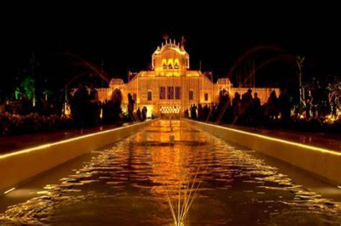
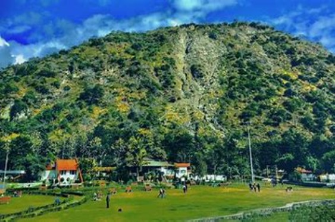

Brahma Sarovar is an ancient and sacred water tank in the city of Kurukshetra, Haryana, India. It holds immense religious significance and is believed to be one of the largest man-made ponds in the world. According to Hindu mythology, it is said that Lord Brahma, the creator god in Hinduism, created the universe from this location. The tank is named after Lord Brahma, hence the name "Brahma Sarovar."
Kurukshetra itself is a historically significant city, known for being the site of the epic battle of the Mahabharata, where Lord Krishna delivered the Bhagavad Gita to Arjuna. Pilgrims from all over India and the world visit Brahma Sarovar, especially during the solar eclipse and the Gita Jayanti festival, believing that taking a dip in the sacred waters of the tank can absolve them of their sins and help them achieve salvation.
Pinjore Gardens

Pinjore Gardens, also known as Yadavindra Gardens, is a beautiful Mughal-style garden located in Pinjore, Haryana, India. The garden is situated in the foothills of the Himalayas, on the Ambala-Shimla road, about 20 kilometers from the city of Chandigarh. It was created in the 17th century by Fidai Khan, who was a governor under the Mughal Emperor Aurangzeb. The garden is an example of the Mughal Garden style, which was popularized throughout the Indian subcontinent by the Mughals.
The layout of Pinjore Gardens is based on the concept of seven descending terraces, offering a splendid view of lush greenery and well-manicured landscapes.
Morni

Morni is a hill station in the Panchkula district of Haryana, India. It's recognized for its scenic beauty, nestled in the Shivalik range of the Himalayas. Morni Hills are approximately 45 kilometers from Chandigarh, the capital city of both Punjab and Haryana, making it a popular weekend getaway for residents of the region. The area is at an altitude of around 1,220 meters (4,000 feet) and offers panoramic views of the surrounding hills and the plains.
The main attractions in Morni Hills include its two lakes, which are interconnected yet appear to be located at different levels.